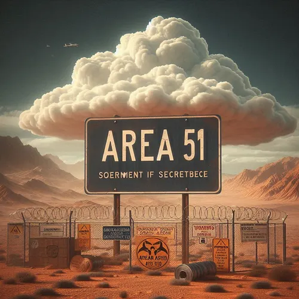

Área 51 y extraterrestres
El Área 51, también conocida como Groom Lake, Homey Airport (OACI: KXTA), es un destacamento aislado controlado por la Base de Edwards de la Fuerza Aérea en el sur del estado de Nevada (Estados Unidos). De acuerdo con la CIA, las designaciones correctas para las instalaciones del Área 51, son el Campo de Pruebas y de Entrenamiento de Nevada y Groom Lake, aunque el nombre de «Área 51» también ha sido utilizado en documentación oficial de la Agencia. Otros nombres designados para la instalación han sido Dreamland, Paradise Ranch, Home Base, Watertown Strip y Homey Airport. El espacio aéreo militar en torno a la zona está denominada como (R-4808N).

Las instalaciones se encuentran ubicadas en una región sureña de Nevada, a unos 133 kilómetros al noroeste de la ciudad de Las Vegas. Situada en el centro, a lo largo de las tierras baldías de las salinas de Groom, es un vasto aeródromo militar. El objetivo principal de la base es indeterminado, no obstante con base en las evidencias históricas, es probable que estén llevando a cabo investigación y desarrollo con sistemas de armamento avanzados y pruebas en aviones experimentales que no son reconocidos oficialmente por el Gobierno de Estados Unidos. El intenso secretismo que rodea a la base ha llegado a convertirse en objeto de interés y en la casuística principal de las teorías de conspiración y el fenómeno OVNI. Aunque Groom Lake no ha estado declarada como base secreta, todas las investigaciones acaecidas en torno al Área 51 es Información Compartimentada y clasificada como de alto secreto de los Estados Unidos. No fue hasta 2013 cuando se confirmó la existencia de la base mediante la Freedom of Information Act. Pero hay rumores de que está desde 1950.
Introducción
La base principal se encuentra dentro del vasto Campo de Pruebas y Entrenamiento de Nevada de la Fuerza Aérea de Estados Unidos, anteriormente conocido como Polígono de la Fuerza Aérea de Nellis (NAFR). Aunque las instalaciones del polígono de pruebas están gestionadas por el Escuadrón 99 de la Base de la Fuerza Aérea de Nellis. La instalación de Groom Lake parece estar ejecutándose junto al Centro de Pruebas de Vuelo de la Fuerza Aérea (AFFTC) del Comando de Material de la Fuerza Aérea en la Base de la Fuerza Aérea de Edwards en el Desierto de Mojave a unos 300 km al suroeste de Groom Lake, y como tal la base es conocida como Centro de Pruebas de Vuelo de la Fuerza Aérea.
A pesar de que el nombre Área 51 se utiliza en la documentación oficial de la CIA, otros nombres con los que se conocen las instalaciones son: Dreamland, Paradise Ranch, Home Base, Watertown Strip, Groom Lake y Homey Airport. La región es parte de la Zona de Operaciones Militares de Nellis y el espacio aéreo restringido en torno a la zona está denominada como (R-4808N) y conocida por los pilotos militares como The Box —La caja—.
La instalación no es una base aérea convencional, así como las unidades operacionales vanguardistas no están desplegadas allí. En su lugar, parece estar utilizándose para Programas Militares Secretos de Acceso Especial y de Defensa, que no son reconocidos públicamente por el gobierno, el personal militar y los contratistas de defensa. Su objetivo puede estar enfocado en apoyar el desarrollo, la experimentación y las fases de entrenamiento para nuevos sistemas de armamento o proyectos de investigación. Una vez que estos proyectos hayan sido aprobados por la Fuerza Aérea de Estados Unidos u otras agencias tales como la CIA, y ya estén preparados para anunciarse al público, las operaciones de vuelo se trasladan a una base aérea corriente.
El intenso secretismo que rodea a la base, cuya existencia no fue reconocida por el Gobierno de los Estados Unidos hasta el 29 de septiembre de 1995, ha llegado a convertirse en el tema principal de las teorías de conspiración y el fenómeno ovni. Todo lo que ocurre en Área 51 es Información Compartimentada y Clasificada como de Alto Secreto, por lo que esta política de seguridad del gobierno asegura que solo aquellos con la suficiente "necesidad de conocimiento" tienen exclusivamente acceso a información que estos requieren, garantizando así que sujetos desconocidos no obtengan información de lo que no conocen.